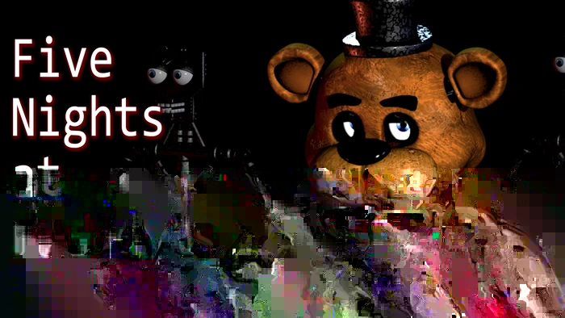
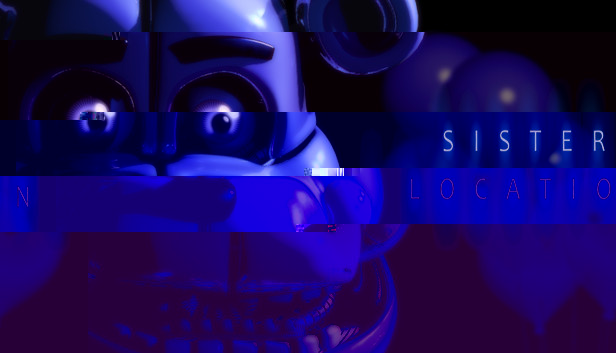
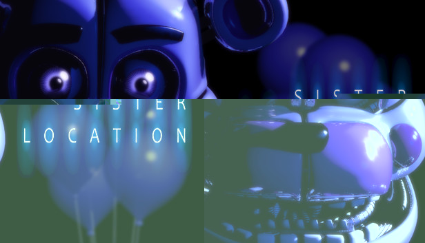
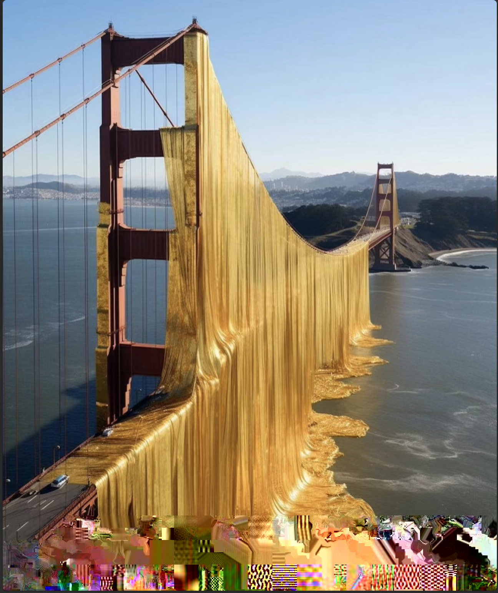
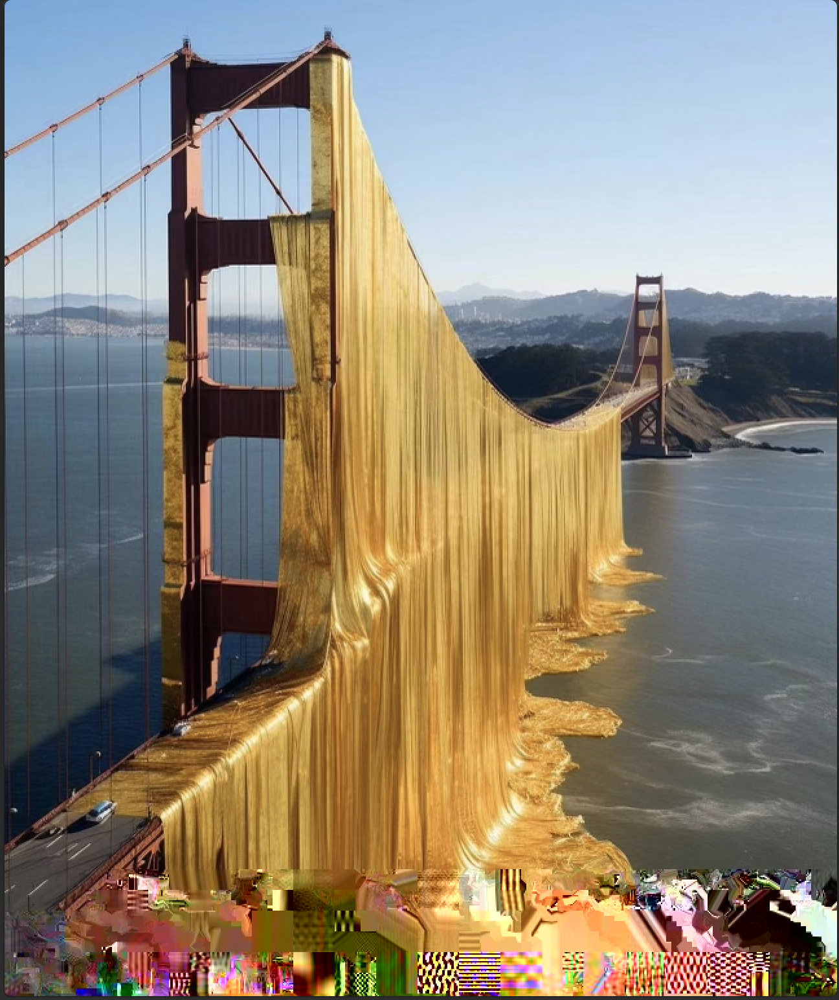

Glitch Art
My glitched images are in order from first to last, as well as before and after. I had a lot of fun with this project, I could visually tell that I was getting better at intentionally glitching. (The bottom right is my favorite)
  
 
